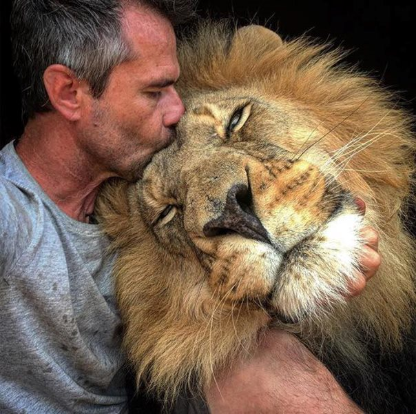

Lion is the king of jungle. He is most powerful animal in the jungle. He has power to defeat any animal. Lions have strong, compact bodies and powerful forelegs, teeth and jaws for pulling down and killing prey. The lion (Panthera leo) is a large cat of the genus Panthera native to Africa and India. It has a muscular, broad-chested body; short, rounded head; round ears; and a hairy tuft at the end of its tail.
More than 90% of the lion’s original range has now been lost across Africa.The main threats facing lions today are: habitat loss and degradation, reduction of wild prey and retaliatory and other illegal killing of lions.Habitat loss has led to some populations becoming small and isolated, especially in West Africa. In all, 214 lions were lost to natural causes and 26 - 13 each in 2021 and 2022 - to unnatural causes in India. At the same time, human population growth and agricultural expansion is causing an unprecedented influx of nomadic livestock into protected areas as alternative grazing reserves disappear.